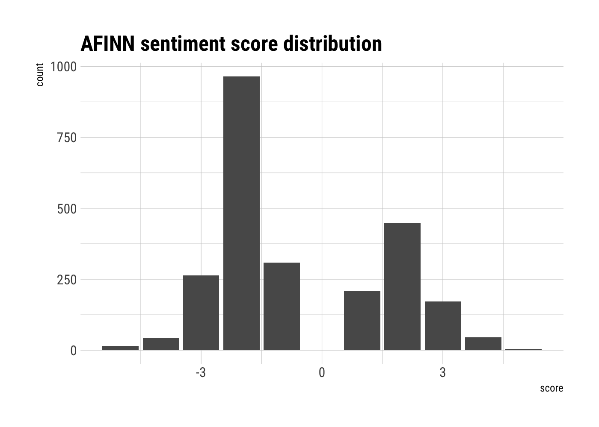
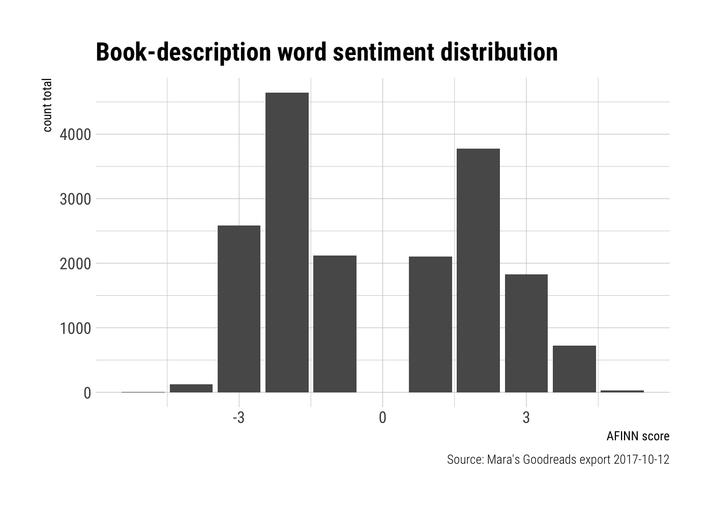

Preamble
Much of the code herein has been adapted from the excellent post “Where my girls at? Scraping Goodreads and using ML to estimate how many children’s books have a cetnral female character” by Giora Simchoni, which I highly recommend.
I’ll also make reference to my earlier post using my Goodreads data, should you want to check that out.
😱 Why aren’t you using the API?!
Calm down! Yes, I know there is a perfectly lovely Goodreads API– and, by “perfectly lovely” I mean for getting pretty much any data other than book descriptions (which, as you will soon discover, are the objects of my desire).
Regular-amble
When I came upon Giora’s post I experienced that weird sort of non-relief that occurs when you no longer have a good excuse to put off a project you’ve been wanting to do, but have been too lazy to actually execute.
Giora uses a one two punch of the rvest and purrr packages to scrape descriptions of children’s books included on a Goodreads list (“Favorite books from my childhood”) and get them into tibbles. This is something I’ve been threatening to do for my own collection of read books on Goodreads, so I figured an adaptation wouldn’t be too much trouble.1
Since lists (the object of Giora’s analysis) and shelves are different (no one votes on whether or not a book should be on my read shelf— I either read it, or I didn’t, so nVoters wouldn’t be a variable for me), I expected there to be a few necessary changes in the code. However, I initially struggled more than I had expected…
My rookie mistake 😳
In many (most?) rvest tutorials, you’ll learn about a Chrome bookmarklet called SelectorGadget (heck, it even has its own eponymous vignette by Hadley Wickham in the rvest docs). It’s basically a tool that helps you identify the CSS or XPath selectors for finding certain elements of a webpage you’re trying to scrape.2
Though I won’t give you a play-by-play of my fruitless attempts, it basically came down to the fact that I was trying to figure things out while logged in to my account.

There are ways to scrape sites with R while logged in.3 However, it turned out that not being logged in was to my advantage as:
1. There’s more data that shows up on the page when you’re not logged in (see below) and;4

2. Pagination actually works the way it’s supposed to (which means you can get 30 entries at a time, rather than dealing with the annoying infinite-scroll interface over and over).

Back on course to scrape 😌
Once I got my selectorGadget situation sorted, the code was, as expected, easily adaptable. With the tidyverse, stringr, and rvest packages, I could construct a scraper, and clean some things up. Then, using purrr’s map_dfr bind the rows from each page together into a single data frame (or tibble, rather).
Oh, one more thing! ☝️
I also made a bit of a last-minute decision to scrape the GENRES from the book pages.

Curating your own library (and its “shelves”) is not as easy as one might think. In addition to the fact that my shelves are patently absurd (see Codename Duchess for my Archer-related reviews, and or Baby Shower Gift Guide for books I think would make good baby shower gifts— y’know, ones like The Boys from Brazil, and The Midwich Cuckoos) I don’t always know ahead of time that I will end up reading a shelf-worthy number of books about a given topic until after the fact.
OK, now we can rvest
The code should be pretty self-explanatory. If you want to do this for your own books, you’d just switch out the startURL so that it points to your shelves, as opposed to mine.5
library(tidyverse)
library(stringr)
library(rvest)
startUrl <- "https://www.goodreads.com/review/list/1923002-mara"
# function to get book descriptions
getBookDescription <- function(bookLink) {
url <- str_c("https://www.goodreads.com", bookLink)
read_html(url) %>%
html_node("#descriptionContainer") %>%
html_text() %>%
trimws()
}
# function to get book genres
get_genres <- function(bookLink){
url <- str_c("https://www.goodreads.com", bookLink)
read_html(url) %>%
html_nodes(".left .bookPageGenreLink") %>%
html_text(trim = TRUE)
}
# function to get books
getBooks <- function(i) {
cat(i, "\n")
url <- str_c(startUrl, "?page=", i, "&shelf=read")
html <- read_html(url)
title <- html %>%
html_nodes(".title a") %>%
html_text(trim = TRUE) #%>%
#discard(!str_detect(., "[A-Z0-9]"))
author <- html %>%
html_nodes(".author a") %>%
html_text(trim = TRUE) %>%
discard(str_detect(., "^\\("))
bookLinks <- html %>%
html_nodes("a") %>%
html_attr("href") %>%
discard(!str_detect(., "^/book/show")) %>%
na.omit() %>%
unique()
bookDescription <- bookLinks %>%
map_chr(getBookDescription)
bookGenre <- bookLinks %>%
map(get_genres)
return(tibble(
title = title,
author = author,
book_description = bookDescription,
book_genres = bookGenre
))
}
# get books (30 per page, 1266 books -> 43 pages)
goodreads <- c(1:43) %>%
map_dfr(getBooks)
# save the output
write_csv(goodreads, path = here("output", "goodreads_read.csv"))Exploring books I’ve read
Cleaning descriptions
clean_book_descs <- read_books_data %>%
mutate(clean_desc = str_replace_all(book_description, "[^a-zA-Z\\s]", " ")) %>%
mutate(clean_desc = str_trim(clean_desc, side = "both")) %>%
select(-book_genres)tidytext time
Now it’s time to use the excellent tidytext 📦 by Julia Silge and David Robinson (which you can learn all about in their book, Text Mining with R) to explore what’s in these descriptions.
unnest_tokens
The descriptions we’ve cleaned will be unnested into individual tokens (in this case, words), and we can get rid of the pre-cleaning book descriptions for now (especially since we still have book_ids at the ready, should we want to get more info aout a particular book).
library(tidytext)
descs_unnested <- clean_book_descs %>%
unnest_tokens(word, clean_desc) %>%
select(-book_description)Let’s also take a look at the word stems using the SnowballC package.
library(SnowballC)
descs_unnested <- descs_unnested %>%
mutate(word_stem = wordStem(word, language="english"))stop_words ✌🏿
Now we’ll get rid of stop words (using the dataset built into tidytext), and count word frequencies.
data("stop_words")
tidy_books <- descs_unnested %>%
anti_join(stop_words, by = "word")
tidy_book_words <- tidy_books %>%
count(word, sort = TRUE)
tidy_book_words## # A tibble: 21,172 x 2
## word n
## <chr> <int>
## 1 world 981
## 2 story 767
## 3 life 765
## 4 book 666
## 5 history 499
## 6 time 479
## 7 war 454
## 8 people 429
## 9 author 406
## 10 american 404
## # ... with 21,162 more rowsThe top words make sense. I do read a lot of books about life, stories, the world, history, time, and people. The book descriptions often begin with editorial praise, e.g.
From the New York Times best-selling author of…
So, it’s not surprising that words like “book” and “author” would make it into the top ten, as well.
We could also look at these aggregates by word stem.
tidy_book_word_stems <- tidy_books %>%
count(word_stem, sort = TRUE)
tidy_book_word_stems## # A tibble: 14,319 x 2
## word_stem n
## <chr> <int>
## 1 world 1001
## 2 stori 967
## 3 time 860
## 4 book 815
## 5 life 767
## 6 histori 509
## 7 author 495
## 8 war 488
## 9 american 486
## 10 live 475
## # ... with 14,309 more rowsThough the word stems themselves are not easy to read, we’ve reduced the number of unique words by grouping together words with the same stem. There are 21172 unique words, and 14319 unique word stems. The counts for word stems are higher than for words, since multiple words have the same stems, e.g. world and worlds, story and stories, etc.
get_sentiments 😼 😠 😭 with AFINN
I won’t go into the details here (for those, check out the Sentiment analysis with tidy data section of Julia and David’s book), but let’s take a look at the sentiments associated with the words from my read book descriptions. I’ll use the AFINN lexicon, which:
“…assigns words with a score that runs between -5 and 5, with negative scores indicating negative sentiment and positive scores indicating positive sentiment” (Silge & Robinson 2017, p.14)
It is important to note, however, that this is a very much a subset of the words used in the book descriptions, and that the “censored” data may have a disproportionate impact in one direction or another.
data(sentiments)
word_sentiments <- tidy_book_words %>%
inner_join(get_sentiments("afinn"), by = "word")
word_sentiments## # A tibble: 1,513 x 3
## word n score
## <chr> <int> <int>
## 1 war 454 -2
## 2 love 298 3
## 3 murder 234 -2
## 4 crime 221 -3
## 5 death 216 -2
## 6 true 202 2
## 7 powerful 181 2
## 8 dead 163 -3
## 9 winning 153 4
## 10 award 151 3
## # ... with 1,503 more rowsI was a little surprised when I first saw some of these. For kill and crime, the AFINN score is -3, but murder is only a -2. The word winning merits a positive 4, but war only gets a negative 2!
You can learn more about AFINN here, and I’m not knocking it. It’s not like I’ve gone through 2,476 words and phrases and rated them for valence! However, it’s always good to look at your data and see what’s going on.
In fact, let’s take a look at all of the AFINN sentiment scores from the sentiments dataset.
library(hrbrthemes) # because I like pretty things
sentiments %>%
filter(!is.na(score)) %>%
group_by(score) %>%
ggplot(aes(score)) +
geom_bar() +
labs(title = "AFINN sentiment score distribution",
xlab = "AFINN score",
ylab = "count") +
theme_ipsum_rc()
So, yeah, looks like there’s a whole lot of -2 going on. That’s not to say it’s incorrect— just worth noting out of curiosity.
Now let’s take a quick gander at the distribution of AFINN scores in the words that appeared both in the descriptions of the books I read, and in the AFINN lexicon. To be fair, we’re not really comparing 🍏s to 🍎s here. The AFINN Lexicon says nothing with respect to the frequency of the words it scores.
word_sentiments %>%
group_by(score) %>%
summarise(score_tot = sum(n)) %>%
ggplot(aes(x = score, y = score_tot)) +
geom_bar(stat = "identity") +
labs(title = "Book-description word sentiment distribution",
x = "AFINN score",
y = "count total",
caption = "Source: Mara's Goodreads export 2017-10-12") +
theme_ipsum_rc()
Take a breather! 😤
There’s much more to be unpacked, but I’m told that human attention spans aren’t what they used to be. So, until next time 🌊
Spoiler alert: It really wasn’t.↩
If you actually want to learn more about it, check out the aforementioned SelectorGadget vignette, and/or a series of great tutorials from UseR2016 Extracting data from the web APIs and beyond by Karthik Ram, Garrett Grolemund and Scott Chamberlain, if you want a more thorough R/webscraping education.↩
There are some good answers about this on Stack Overflow using rvest alone, or with other packages such as RSelenium.↩
Sorry, this doesn’t exactly match up with the read books in this and/or my previous Goodreads post, as I’ve finished a few more between when I first started writing this and now. 😜↩
Because this process take a while, the code here is shown (
echo = TRUE, if you’re familiar with R Markdown chunks), but not actually run (eval = FALSEin Rmd terms).↩